The most recent class project involved creating a responsive design for a restaurant landing page and about page. I used Bootstrap for the layout, with the assets coming from the model page.Click to view code on Github »The Venedor project evolved from creating a landing page based on a static image to one that included functionality features for currency, language, and cart totals, a carousel and cards for individual items with discount and price overlays.Click to view code on Github »The GraphicsUmbrella page includes a banner mockup of a carousel, three content sections with text, cards and images, and a four-column footer with a footer navbar. The assets were clipped from the model page.Click to view code on Github »The Detroix project was the transition point between using the layout methods of margin-padding-float, position, and flexbox before introducing Bootstrap. This is the Bootstap version of the landing page.Click to view code on Github »The second major project developed a landing page for a shopping site using basic CSS layout philosophies introducing the HTML elements that support interactivity. The page header includes a logo, a search bar and a navigation bar. The main page sections include a banner, two featured products sections, with images, links, and buttons for purchases. The footer has four lists with links for the store's departments.Click to view code on Github »The Bloom Landing Page was the first major class project. I built the page three ways using the CSS design philosophies of margin-padding-float, position, and flex-box. The HTML includes a wrapper labeled inner to contain the elements in the layout. Basic techniques include color matching, image cropping and font selection along with using gradients, lists and buttons.Click to view code on Github »
JavaScript Project - Cryptoquote Game
Click image to play
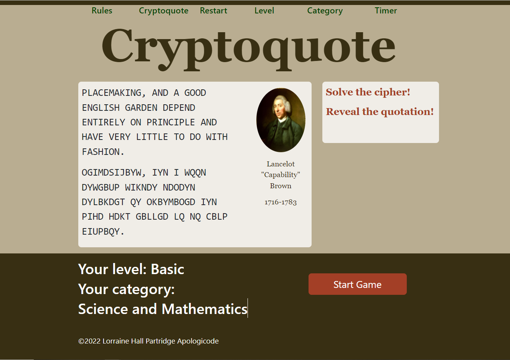The Cryptoquote is a classic word puzzle that uses a random number generator to create a cipher alphabet that is used to encode a famous quotation. The player must solve the cipher before running out of points to win the game. The color scheme is based on the image of a famous family ancestor, English landscape gardener Capability Brown.Click to view code on Github »
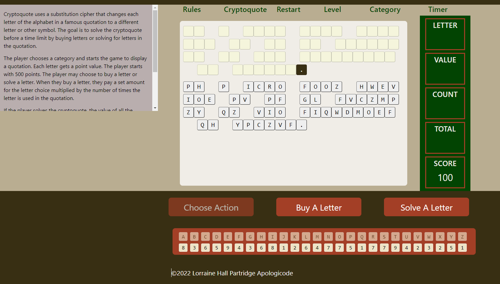When the game starts, the gameboard displays two sets of letter tiles for the quotation and its cipher, the game action buttons and two sets of alphabet tiles at the bottom, and the scoreboard on the right. The player solves the puzzle by choosing to buy a letter or solve a letter. The rules display on hover. The letter values are based on the letter's frequency in the English language. More common letters cost more, and rarer letters have less value. Click to view code on Github »The player begins with 100 points which can be used to buy all instances of a letter. When the player chooses and confirms the letter, the scoreboard displays the total number of instances, the cost of the letter purchase, and the new score with the cost deducted. If the score goes below zero, the game is lost. The gameboard displays all instances of the letter that is bought.Click to view code on Github »
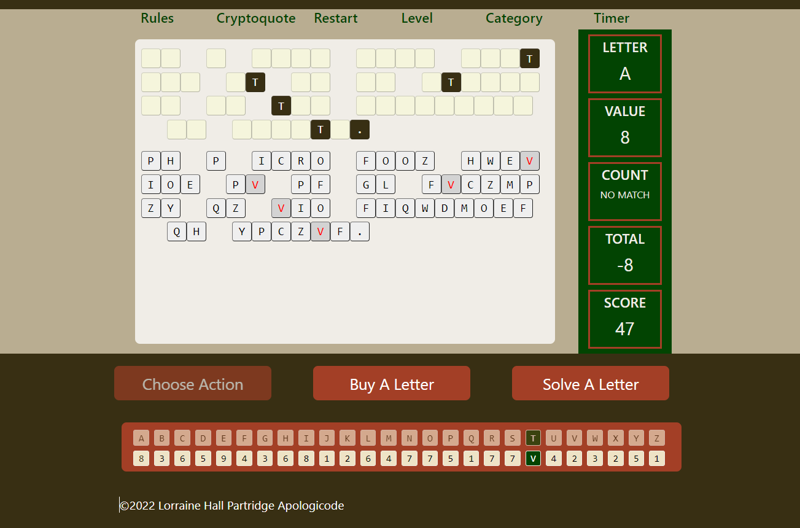When context clues provide hints to a letter, the player may choose to earn points by solving a letter, a two-step process. After choosing to solve a letter, the player clicks on the letter in the alphabet and confirms it, then clicks on the letter tile to be solved in the quotation. If there is no match, the score is reduced by the value of the letter. Click to view code on Github »
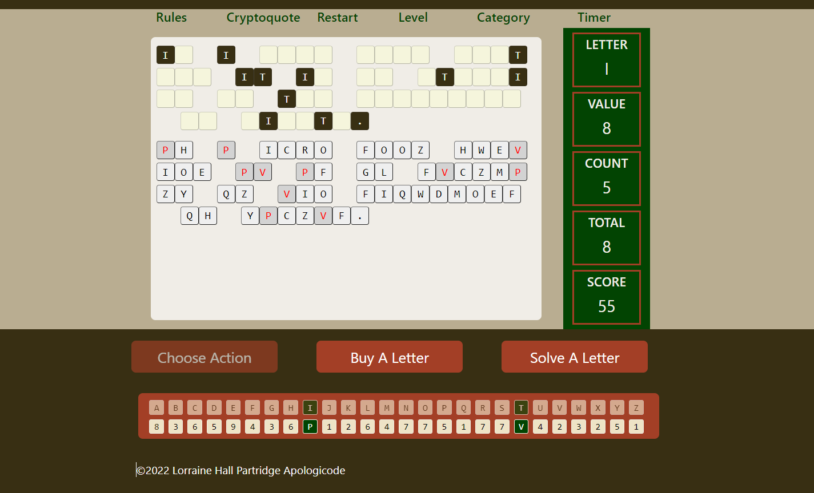If the letter matches, then all instances are displayed, and the score is increased by the value of the letter. The player alternates between buying and solving letters to solve the puzzle before running out of points.Click to view code on Github »
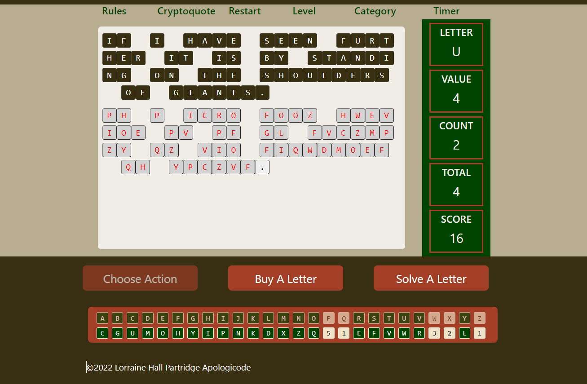To win the game, the player must have enough points remaining after solving the puzzle to buy the unused letters. It requires a bit of strategy to ensure that a game win is possible.Click to view code on Github »
API Projects
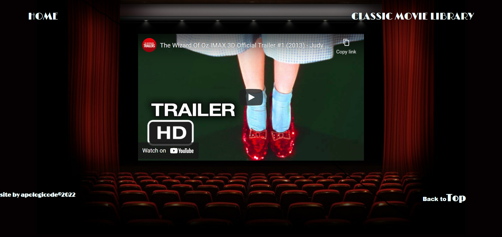The classic movies API home page features the trailer for "The Wizard of Oz" embedded from YouTube on a movie theater background. The Movie Library Page displays the poster image from the Sample APIs website. The page for each movie also features the poster image. The pages were built using EJS.Click to view code on Github »
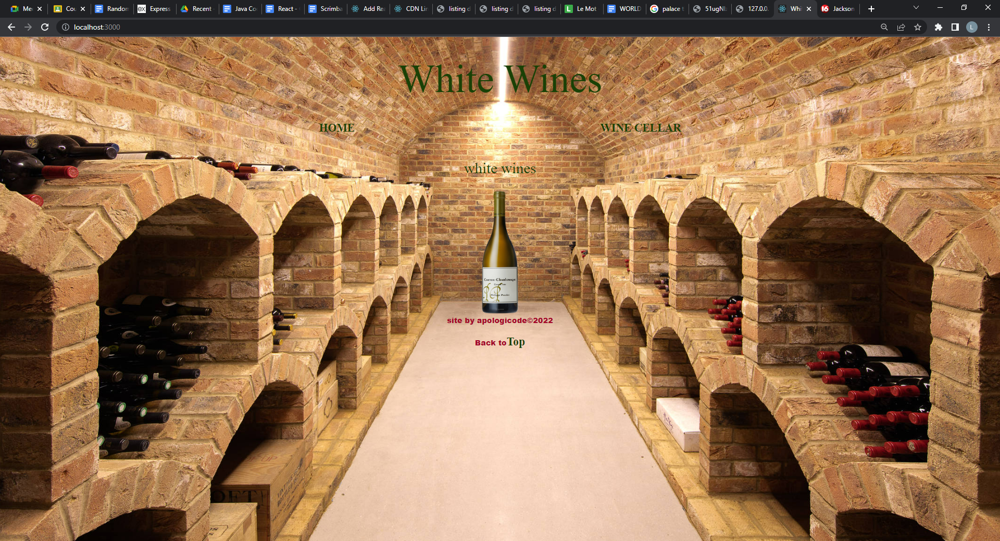The wines APIs each feature a home page with a random wine from the database displayed in a wine cellar background. The individual wine page features the same background. The Wine Cellar page has a neutral background. The projects use the Sample APIs wines databases. The pages were build with EJS.Click to view code on Github »
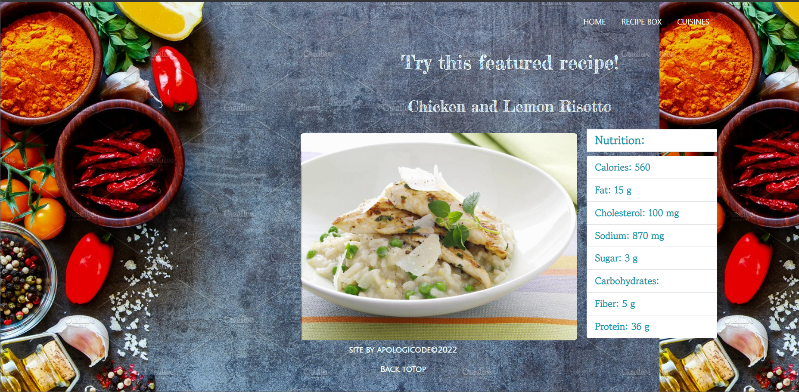The Recipes API home page displays a random recipe from the Sample APIs database, along with nutritional information about the recipe if it is available using EJS. The Recipe Box page displays a card for each recipe, while the individual recipe pages display the ingredients in an unordered list and the recipe directions in an ordered list. The available information for nutrition and preparation times are displayed. There is a also page for recipes sorted by cuisine.Click to view code on Github »
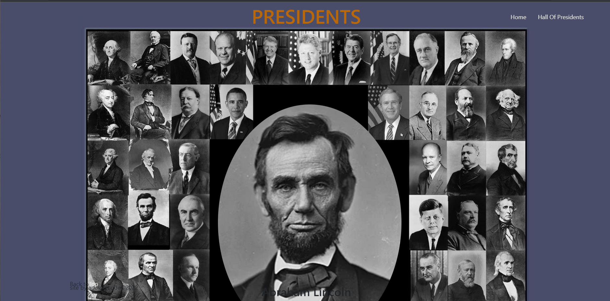The Presidents API draws from the Sample APIs database to display a random president on a background of presidential portraits. The Hall of Presidents also includes the term, while the individual president page includes additional information from the database. The pages were built with EJS.Click to view code on Github »
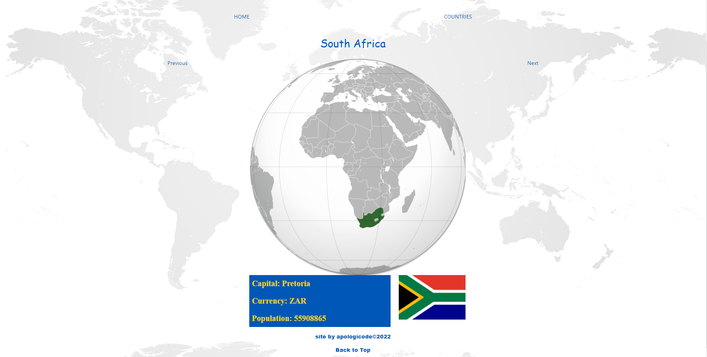The Countries database at Sample APIs used for this project includes images of a map, a flag, and an emblem along with information about each country. If the map is unavailable, the home page displays the emblem for the randomly selected featured country. The individual country page includes a data card. The pages use EJS.Click to view code on Github »
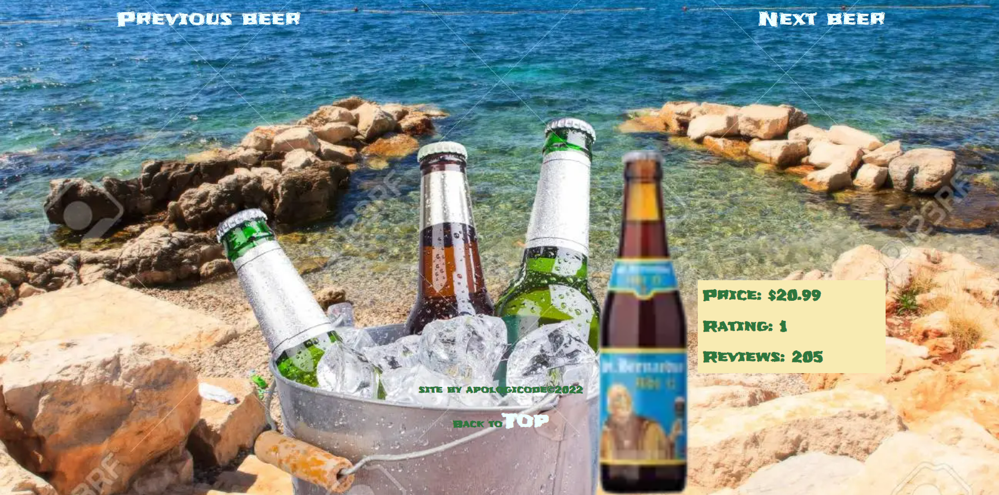The Beers project features a random beer chosen from the Sample APIs database on the home page over a background of beer bubbles. The Beer Cooler page features a neutral background, while the individual beer page displays the featured beer on a beer at the beach background. The pages were built using EJS.Click to view code on Github »